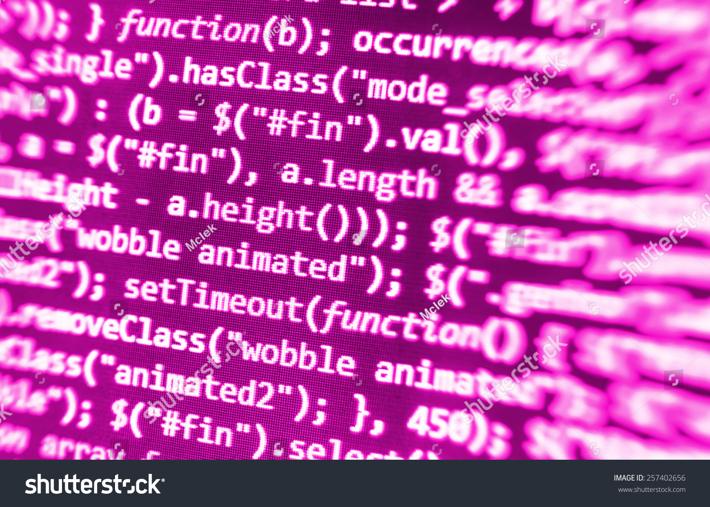

LIS 500: Code & Power, an intersectional examination of the Internet. In this course you will interrogate the role of power relations, race, class, and gender as they shape our digital experiences. In this course, you will analyze and critique structural mechanisms related to racial and gender disparities in the computing industries, gaining practical and theoretical understanding of the means by which women and people of color negotiate conditions of exclusion or marginalization within computing. To learn more about information science
